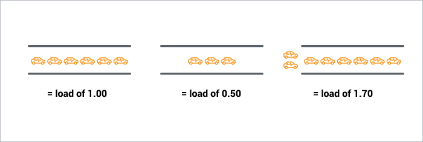

Regular Jobs¶
| Node Type | Slurm command |
|---|---|
| regular | sbatch [-A <project>] -p batch [--qos {high,urgent}] [-C {broadwell,skylake}] [...] |
| gpu | sbatch [-A <project>] -p gpu [--qos {high,urgent}] [-C volta[32]] -G 1 [...] |
| bigmem | sbatch [-A <project>] -p bigmem [--qos {high,urgent}] [...] |
Main Slurm commands Resource Allocation guide
sbatch [...] /path/to/launcher¶
sbatch is used to submit a batch launcher script for later execution, corresponding to batch/passive submission mode.
The script will typically contain one or more srun commands to launch parallel tasks.
Upon submission with sbatch, Slurm will:
- allocate resources (nodes, tasks, partition, constraints, etc.)
- runs a single copy of the batch script on the first allocated node
- in particular, if you depend on other scripts, ensure you have refer to them with the complete path toward them.
When you submit the job, Slurm responds with the job's ID, which will be used to identify this job in reports from Slurm.
# /!\ ADAPT path to launcher accordingly
$ sbatch <path/to/launcher>.sh
Submitted batch job 864933
Job Submission Option¶
There are several useful environment variables set be Slurm within an allocated job.
The most important ones are detailed in the below table which summarizes the main job submission options offered with {sbatch | srun | salloc} [...]:
| Command-line option | Description | Example |
|---|---|---|
-N <N> |
<N> Nodes request |
-N 2 |
--ntasks-per-node=<n> |
<n> Tasks-per-node request |
--ntasks-per-node=28 |
--ntasks-per-socket=<s> |
<s> Tasks-per-socket request |
--ntasks-per-socket=14 |
-c <c> |
<c> Cores-per-task request (multithreading) |
-c 1 |
--mem=<m>GB |
<m>GB memory per node request |
--mem 0 |
-t [DD-]HH[:MM:SS]> |
Walltime request | -t 4:00:00 |
-G <gpu> |
<gpu> GPU(s) request |
-G 4 |
-C <feature> |
Feature request (broadwell,skylake...) |
-C skylake |
-p <partition> |
Specify job partition/queue | |
--qos <qos> |
Specify job qos | |
-A <account> |
Specify account | |
-J <name> |
Job name | -J MyApp |
-d <specification> |
Job dependency | -d singleton |
--mail-user=<email> |
Specify email address | |
--mail-type=<type> |
Notify user by email when certain event types occur. | --mail-type=END,FAIL |
At a minimum a job submission script must include number of nodes, time, type of partition and nodes (resource allocation constraint and features), and quality of service (QOS).
If a script does not specify any of these options then a default may be applied.
The full list of directives is documented in the man pages for the sbatch command (see. man sbatch).
Within a job, you aim at running a certain number of tasks, and Slurm allow for a fine-grain control of the resource allocation that must be satisfied for each task.
Beware of Slurm terminology in Multicore Architecture!

- Slurm Node = Physical node, specified with
-N <#nodes>- Advice: always explicit number of expected number of tasks per node using
--ntasks-per-node <n>. This way you control the node footprint of your job.
- Advice: always explicit number of expected number of tasks per node using
- Slurm Socket = Physical Socket/CPU/Processor
- Advice: if possible, explicit also the number of expected number of tasks per socket (processor) using
--ntasks-per-socket <s>.- relations between
<s>and<n>must be aligned with the physical NUMA characteristics of the node. - For instance on aion nodes,
<n> = 8*<s> - For instance on iris regular nodes,
<n>=2*<s>when on iris bigmem nodes,<n>=4*<s>.
- relations between
- Advice: if possible, explicit also the number of expected number of tasks per socket (processor) using
- (the most confusing): Slurm CPU = Physical CORE
- use
-c <#threads>to specify the number of cores reserved per task. - Hyper-Threading (HT) Technology is disabled on all ULHPC compute nodes. In particular:
- assume #cores = #threads, thus when using
-c <threads>, you can safely setto automatically abstract from the job contextOMP_NUM_THREADS=${SLURM_CPUS_PER_TASK:-1} # Default to 1 if SLURM_CPUS_PER_TASK not set - you have interest to match the physical NUMA characteristics of the compute node you're running at (Ex: target 16 threads per socket on Aion nodes (as there are 8 virtual sockets per nodes, 14 threads per socket on Iris regular nodes).
- assume #cores = #threads, thus when using
- use
The total number of tasks defined in a given job is stored in the $SLURM_NTASKS environment variable.
This is very convenient to abstract from the job context to run MPI tasks/processes in parallel using for instance:
srun -n ${SLURM_NTASKS} [...]
We encourage you to always explicitly specify upon resource allocation the number of tasks you want per node/socket (--ntasks-per-node <n> --ntasks-per-socket <s>), to easily scale on multiple nodes with -N <N>. Adapt the number of threads and the settings to match the physical NUMA characteristics of the nodes
16 cores per socket and 8 (virtual) sockets (CPUs) per aion node.
{sbatch|srun|salloc|si} [-N <N>] --ntasks-per-node <8n> --ntasks-per-socket <n> -c <thread>- Total:
<N>\times 8\times<n>tasks, each on<thread>threads - Ensure
<n>\times<thread>= 16 - Ex:
-N 2 --ntasks-per-node 32 --ntasks-per-socket 4 -c 4(Total: 64 tasks)
- Total:
14 cores per socket and 2 sockets (physical CPUs) per regular iris.
{sbatch|srun|salloc|si} [-N <N>] --ntasks-per-node <2n> --ntasks-per-socket <n> -c <thread>- Total:
<N>\times 2\times<n>tasks, each on<thread>threads - Ensure
<n>\times<thread>= 14 - Ex:
-N 2 --ntasks-per-node 4 --ntasks-per-socket 2 -c 7(Total: 8 tasks)
- Total:
28 cores per socket and 4 sockets (physical CPUs) per bigmem iris
{sbatch|srun|salloc|si} [-N <N>] --ntasks-per-node <4n> --ntasks-per-socket <n> -c <thread>- Total:
<N>\times 4\times<n>tasks, each on<thread>threads - Ensure
<n>\times<thread>= 28 - Ex:
-N 2 --ntasks-per-node 8 --ntasks-per-socket 2 -c 14(Total: 16 tasks)
- Total:
Careful Monitoring of your Jobs¶
Bug
DON'T LEAVE your jobs running WITHOUT monitoring them and ensure they are not abusing of the computational resources allocated for you!!!
ULHPC Tutorial / Getting Started
You will find below several ways to monitor the effective usage of the resources allocated (for running jobs) as well as the general efficiency (Average Walltime Accuracy, CPU/Memory efficiency etc.) for past jobs.
Joining/monitoring running jobs¶
sjoin¶
At any moment of time, you can join a running job using the
custom helper functions
sjoin in another terminal (or another screen/tmux tab/window). The format is as follows:
sjoin <jobid> [-w <node>] # Use <tab> to automatically complete <jobid> among your jobs
Using sjoin to htop your processes
# check your running job
(access)$> sq
# squeue -u $(whoami)
JOBID PARTIT QOS NAME USER NODE CPUS ST TIME TIME_LEFT PRIORITY NODELIST(REASON)
2171206 [...]
# Connect to your running job, identified by its Job ID
(access)$> sjoin 2171206 # /!\ ADAPT <jobid> accordingly, use <TAB> to have it autocatically completed
# Equivalent of: srun --jobid 2171206 --gres=gpu:0 --pty bash -i
(node)$> htop # view of all processes
# F5: tree view
# u <name>: filter by process of <name>
# q: quit
On the [impossibility] to monitor passive GPU jobs over sjoin
If you use sjoin to join a GPU job, you WON'T be able to see the allocated GPU activity with nvidia-smi and all the monitoring tools provided by NVidia.
The reason is that currently, there is no way to perform an over-allocation of a Slurm Generic Resource (GRES) as our GPU cards, that means you can't create (e.g. with sjoin or srun --jobid [...]) job steps with access to GPUs which are bound to another step.
To keep sjoin working with gres job, you MUST add "--gres=none"
You can use a direct connection with ssh <node> or clush -w @job:<jobid> for that (see below) but be aware that confined context is NOT maintained that way and that you will see the GPU processes on all 4 GPU cards.
ClusterShell¶
Danger
Only for VERY Advanced users!!!. You should know what you are doing when using ClusterShell as you can mistakenly generate a huge amount of remote commands across the cluster which, while they will likely fail, still induce an unexpected load that may disturb the system.
ClusterShell is a useful Python package for executing arbitrary commands across multiple hosts. On the ULHPC clusters, it provides a relatively simple way for you to run commands on nodes your jobs are running on, and collect the results.
Info
You can only ssh to, and therefore run clush on, nodes where you have active/running jobs.
nodeset¶
The nodeset command enables the easy manipulation of node sets, as well as node groups, at the command line level.
It uses sinfo underneath but has slightly different syntax. You can use it to ask about node states and nodes your job is running on.
The nice difference is you can ask for folded (e.g. iris-[075,078,091-092]) or expanded (e.g. iris-075 iris-078 iris-091 iris-092) forms of the node lists.
| Command | description |
|---|---|
nodeset -L[LL] |
List all groups available |
nodeset -c [...] |
show number of nodes in nodeset(s) |
nodeset -e [...] |
expand nodeset(s) to separate nodes |
nodeset -f [...] |
fold nodeset(s) (or separate nodes) into one nodeset |
Nodeset expansion and folding
# Get list of nodes with issues
$ sinfo -R --noheader -o "%N"
iris-[005-008,017,161-162]
# ... and expand that list
$ sinfo -R --noheader -o "%N" | nodeset -e
iris-005 iris-006 iris-007 iris-008 iris-017 iris-161 iris-162
# Actually equivalent of (see below)
$ nodeset -e @state:drained
# List nodes in IDLE state
$> sinfo -t IDLE --noheader
interactive up 4:00:00 4 idle iris-[003-005,007]
long up 30-00:00:0 2 idle iris-[015-016]
batch* up 5-00:00:00 1 idle iris-134
gpu up 5-00:00:00 9 idle iris-[170,173,175-178,181]
bigmem up 5-00:00:00 0 n/a
# make out a synthetic list
$> sinfo -t IDLE --noheader | awk '{ print $6 }' | nodeset -f
iris-[003-005,007,015-016,134,170,173,175-178,181]
# ... actually done when restricting the column to nodelist only
$> sinfo -t IDLE --noheader -o "%N"
iris-[003-005,007,015-016,134,170,173,175-178,181]
# Actually equivalent of (see below)
$ nodeset -f @state:idle
Exclusion / intersection of nodeset
| Option | Description |
|---|---|
-x <nodeset> |
exclude from working set <nodeset> |
-i <nodeset> |
intersection from working set with <nodeset> |
-X <nodeset> (--xor) |
elements that are in exactly one of the working set and <nodeset> |
# Exclusion
$> nodeset -f iris-[001-010] -x iris-[003-005,007,015-016]
iris-[001-002,006,008-010]
# Intersection
$> nodeset -f iris-[001-010] -i iris-[003-005,007,015-016]
iris-[003-005,007]
# "XOR" (one occurrence only)
$> nodeset -f iris-[001-010] -x iris-006 -X iris-[005-007]
iris-[001-004,006,008-010]
The groups useful to you that we have configured are @user, @job and @state.
$ nodeset -LLL
# convenient partition groups
@batch iris-[001-168] 168
@bigmem iris-[187-190] 4
@gpu iris-[169-186,191-196] 24
@interactive iris-[001-196] 196
# conveniente state groups
@state:allocated [...]
@state:idle [...]
@state:mixed [...]
@state:reserved [...]
# your individual jobs
@job:2252046 iris-076 1
@job:2252050 iris-[191-196] 6
# all the jobs under your username
@user:svarrette iris-[076,191-196] 7
List expanded node names where you have jobs running
# Similar to: squeue -h -u $USER -o "%N"|nodeset -e
$ nodeset -e @user:$USER
List folded nodes where your job 1234567 is running (use sq to quickly list your jobs):
$ similar to squeue -h -j 1234567 -o "%N"
nodeset -f @job:1234567
List expanded node names that are idle according to slurm
# Similar to: sinfo -t IDLE -o "%N"
nodeset -e @state:idle
clush¶
clush can run commands on multiple nodes at once for instance to monitor you jobs. It uses the node grouping syntax from [nodeset]((https://clustershell.readthedocs.io/en/latest/tools/nodeset.html) to allow you to run commands on those nodes.
clush uses ssh to connect to each of these nodes.
You can use the -b option to gather output from nodes with same output into the same lines. Leaving this out will report on each node separately.
| Option | Description |
|---|---|
-b |
gathering output (as when piping to dshbak -c) |
-w <nodelist> |
specify remote hosts, incl. node groups with @group special syntax |
-g <group> |
similar to -w @<group>, restrict commands to the hosts group <group> |
--diff |
show differences between common outputs |
Show %cpu, memory usage, and command for all nodes running any of your jobs.
clush -bw @user:$USER ps -u$USER -o%cpu,rss,cmd
<jobid>
clush -bw @job:<jobid> ps -u$USER -o%cpu,rss,cmd
Show what's running on all the GPUs on the nodes associated with your job 654321.
clush -bw @job:654321 bash -l -c 'nvidia-smi --format=csv --query-compute-apps=process_name,used_gpu_memory'
clush -bw @user:$USER bash -l -c 'nvidia-smi --format=csv --query-compute-apps=process_name,used_gpu_memory'
This may be convenient for passive jobs since the sjoin utility does NOT permit to run nvidia-smi (see explaination).
However that way you will see unfortunately ALL processes running on the 4 GPU cards -- including from other users sharing your nodes. It's a known bug, not a feature.
pestat: CPU/Mem usage report¶
We have deployed the (excellent) Slurm tool pestat (Processor Element status) of Ole Holm Nielsen that you can use to quickly check the CPU/Memory usage of your jobs.
Information deserving investigation (too low/high CPU or Memory usage compared to allocation) will be flagged in Red or Magenta
pestat [-p <partition>] [-G] [-f]
pestat output (official sample output)

General Guidelines¶
As mentionned before, always check your node activity with at least htop on the all allocated nodes to ensure you use them as expected. Several cases might apply to your job workflow:
You are dealing with an embarrasingly parallel job campaign and this approach is bad and overload the scheduler unnecessarily.
You will also quickly cross the limits set in terms of maximum number of jobs.
You must aggregate multiples tasks within a single job to exploit fully a complete node.
In particular, you MUST consider using GNU Parallel and our generic GNU launcher launcher.parallel.sh.
ULHPC Tutorial / HPC Management of Embarrassingly Parallel Jobs
If you asked for more than a core in your job (> 1 tasks, -c <threads> where <threads> > 1), there are 3 typical situations you MUST analysed (and pestat or htop are of great help for that):
- You cannot see the expected activity (only 1 core seems to be active at 100%), then you should review your workflow as you are under-exploiting (and thus probably waste) the allocated resources.
-
you have the expected activity on the requested cores (Ex: the 28 cores were requested, and
htopreports a significant usage of all cores) BUT the CPU load of the system exceed the core capacity of the computing node. That means you are forking too many processes and overloading/harming the systems.- For instance on regular
iris(resp.aion) node, a CPU load above 28 (resp. 128) is suspect.- Note that we use LBNL Node Health Check (NHC) to automatically drain nodes for which the load exceed twice the core capacity
- An analogy for a single core load with the amont of cars possible in a single-lane brige or tunnel is illustrated below (
source ). Like the bridge/tunnel operator, you'd like your cars/processes to never be waiting, otherwise you are harming the system. Imagine this analogy for the amount of cores available on a computing node to better reporesent the situtation on a single core.

- For instance on regular
-
you have the expected activity on the requested cores and the load match your allocation without harming the system: you're good to go!
If you asked for more than ONE node, ensure that you have consider the following questions.
- You are running an MPI job: you generally know what you're doing, YET ensure your followed the single node monitoring checks (
htopetc. yet across all nodes) to review your core activity on ALL nodes (see 3. below) . Consider also parallel profilers like Arm Forge - You are running an embarrasingly parallel job campaign. You should first ensure you correctly exploit a single node using GNU Parallel before attempting to cross multiple nodes
- You run a distributed framework able to exploit multiple nodes (typically with a master/slave model as for Spark cluster). You MUST assert that your [slave] processes are really run on the over nodes using
# check you running job
$ sq
# Join **another** node than the first one listed
$ sjoin <jobid> -w <node>
$ htop # view of all processes
# F5: tree view
# u <name>: filter by process of <name>
# q: quit
Monitoring past jobs efficiency¶
Walltime estimation and Job efficiency
By default, none of the regular jobs you submit can exceed a walltime of 2 days (2-00:00:00).
You have a strong interest to estimate accurately the walltime of your jobs.
While it is not always possible, or quite hard to guess at the beginning of a given job campaign where you'll probably ask for the maximum walltime possible, you should look back as your historical usage for the past efficiency and elapsed time of your previously completed jobs using seff or susage utilities.
Update the time constraint [#SBATCH] -t [...] of your jobs accordingly.
There are two immediate benefits for you:
- Short jobs are scheduled faster, and may even be elligible for backfilling
- You will be more likely elligible for a raw share upgrade of your user account -- see Fairsharing
The below utilities will help you track the CPU/Memory efficiency (seff) or the Average Walltime Accuracy (susage, sacct) of your past jobs
seff¶
Use seff to double check a past job CPU/Memory efficiency. Below examples should be self-speaking:
$ seff 2171749
Job ID: 2171749
Cluster: iris
User/Group: <login>/clusterusers
State: COMPLETED (exit code 0)
Nodes: 1
Cores per node: 28
CPU Utilized: 41-01:38:14
CPU Efficiency: 99.64% of 41-05:09:44 core-walltime
Job Wall-clock time: 1-11:19:38
Memory Utilized: 2.73 GB
Memory Efficiency: 2.43% of 112.00 GB
$ seff 2117620
Job ID: 2117620
Cluster: iris
User/Group: <login>/clusterusers
State: COMPLETED (exit code 0)
Nodes: 1
Cores per node: 16
CPU Utilized: 14:24:49
CPU Efficiency: 23.72% of 2-12:46:24 core-walltime
Job Wall-clock time: 03:47:54
Memory Utilized: 193.04 GB
Memory Efficiency: 80.43% of 240.00 GB
$ seff 2138087
Job ID: 2138087
Cluster: iris
User/Group: <login>/clusterusers
State: COMPLETED (exit code 0)
Nodes: 1
Cores per node: 64
CPU Utilized: 87-16:58:22
CPU Efficiency: 86.58% of 101-07:16:16 core-walltime
Job Wall-clock time: 1-13:59:19
Memory Utilized: 1.64 TB
Memory Efficiency: 99.29% of 1.65 TB
This illustrates a very bad job in terms of CPU/memory efficiency (below 4%), which illustrate a case where basically the user wasted 4 hours of computation while mobilizing a full node and its 28 cores.
$ seff 2199497
Job ID: 2199497
Cluster: iris
User/Group: <login>/clusterusers
State: COMPLETED (exit code 0)
Nodes: 1
Cores per node: 28
CPU Utilized: 00:08:33
CPU Efficiency: 3.55% of 04:00:48 core-walltime
Job Wall-clock time: 00:08:36
Memory Utilized: 55.84 MB
Memory Efficiency: 0.05% of 112.00 GB
Note however that demonstrating a CPU good efficiency with seff may not be enough!
You may still induce an abnormal load on the reserved nodes if you spawn more processes than allowed by the Slurm reservation.
To avoid that, always try to prefix your executions with srun within your launchers. See also Specific Resource Allocations.
susage¶
Use susage to check your past jobs walltime accuracy (Timelimit vs. Elapsed)
$ susage -h
Usage: susage [-m] [-Y] [-S YYYY-MM-DD] [-E YYYT-MM-DD]
For a specific user (if accounting rights granted): susage [...] -u <user>
For a specific account (if accounting rights granted): susage [...] -A <account>
Display past job usage summary
In all cases, if you are confident that your jobs will last more than 2 days while efficiently using the allocated resources, you can use --qos long QOS. Be aware that special restrictions applies for this kind of jobs.